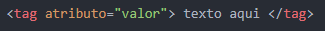
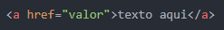
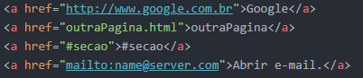
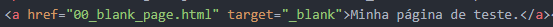

O link nos permite acessar outras páginas, outros textos ou outras partes de uma página, justificando a existência dos hipertextos e da própria web.
Para isso, ele se utiliza de atributos que nos direcionam para o destino para o qual o link deverá nos levar, ou alteram o comportamento no navegador, por exemplo.
O atributo que define o destino é o "href":
Tipos possíveis de valor para o atributo "href":

Google Link para página extena. Deve-se colocar o "http://" e o endereço do site.
outraPagina Link para página local. Coloca-se o nome do arquivo mais a extensão ".html". (clique)
#secao Link para uma parte do site, na mesma página. (Aqui vai aquele efeito com CSS para rolar a página até um ponto da páfina.)
Abrir e-mail. Link utilizado para abrir o e-mail, quando o usuário utiliza software de gerenciamento de e-mails como o Outlook.
Outros atributos:
O atributo "target" juntamente com o valor "_blank" serve para abrir a página do destino em uma nova aba.

Isto posto, vamos entrar no assunto CSS.
Ou, você pode voltar!